Removing the exhaust system
Remove the complete oil sump guard (
Removing the oil sump guard
).
Remove the exhaust silencer (
Removal of the silencer
).
Turn pulley (A) of the exhaust valve to facilitate the removal of the control cable (1).
Remove control cable (1) from pulley (A).
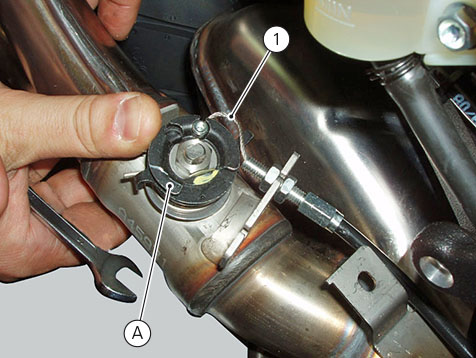
Loosen nut (C).
Release control cable (1) from plate (B).
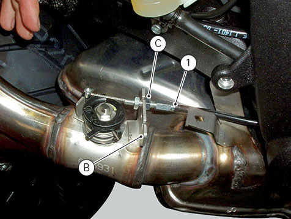
Remove the two fixing springs (2).
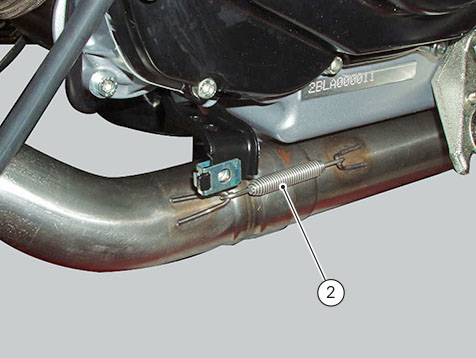
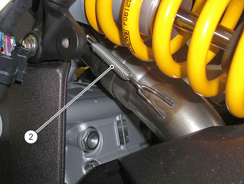
Support the catalytic converter (3), then loosen and remove screw (4) on the vehicle left side.
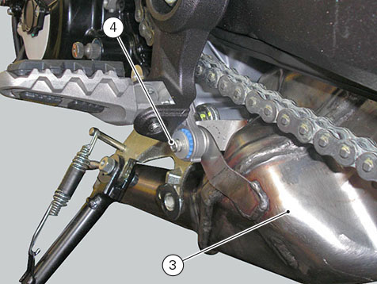
Loosen and remove screw (4) on the vehicle left side.
Remove the catalytic converter (3).
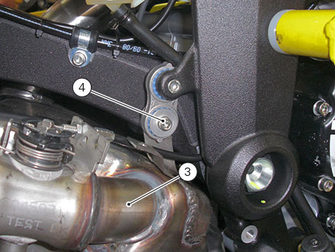
Unscrew and remove the horizontal cylinder lambda sensor (5).
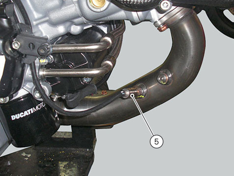
Loosen and remove the three nuts (6) to remove the horizontal manifold (7) with gasket (8).
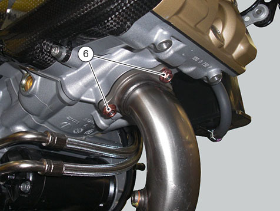
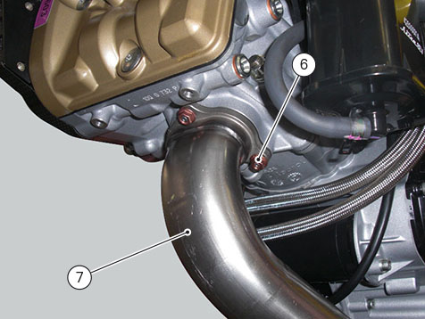
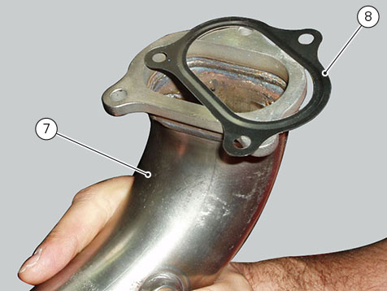
Unscrew and remove the vertical cylinder lambda sensor (5).
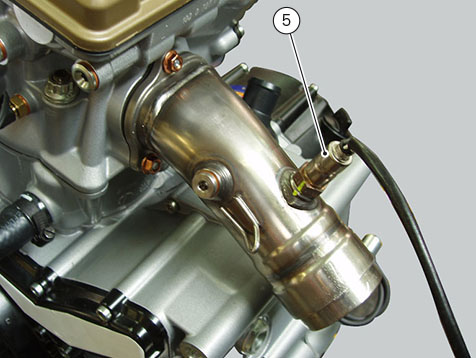
Loosen and remove the three nuts (6) to remove manifold (9) with gasket (8).
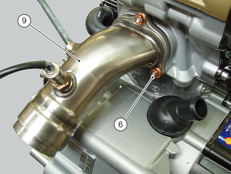